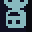
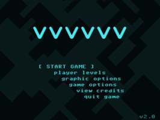
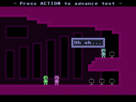
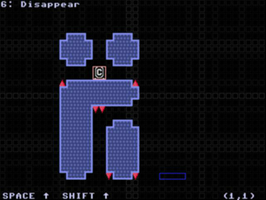

VVVVVV
Dieser Artikel wurde für die folgenden Ubuntu-Versionen getestet:
Ubuntu 16.04 Xenial Xerus
Zum Verständnis dieses Artikels sind folgende Seiten hilfreich:

VVVVVV  ist eine Hommage an die frühen C64-Spiele. Die Grafik tritt in den Hintergrund und wird zur Nebensache. Unüblicherweise für dieses Genre kann man im Spiel nicht mit dem Charakter springen. Man kann lediglich die Gravitation zu seinen Gunsten ändern. Eine unendliche Anzahl von Leben erlauben es die mitunter schwierigen Level nach diversen Anläufen zu meistern.
ist eine Hommage an die frühen C64-Spiele. Die Grafik tritt in den Hintergrund und wird zur Nebensache. Unüblicherweise für dieses Genre kann man im Spiel nicht mit dem Charakter springen. Man kann lediglich die Gravitation zu seinen Gunsten ändern. Eine unendliche Anzahl von Leben erlauben es die mitunter schwierigen Level nach diversen Anläufen zu meistern.
Nach einer Evakuierung mit dem Teleporter, welche durch einen Zwischenfall bei einer Dimensioneninterferenz eingeleitet wurde, landet Captain Viridian alleine in einer Paralleldimension. Er begibt sich auf die Suche nach seiner Mannschaft. Es warten Allerlei tödliche Gefahren in dieser Welt. In Form von Zacken, rosa Wolken, Worten, Herzen...
|  |  |  |
| Menü | Spielszene | Leveleditor |
Installation¶
Desura¶
Das Spiel kann über die Internetseite oder den Client zur Spieleliste hinzugefügt und gestartet werden [1].
Humble Indie Bundle #3¶
Das Spiel, aus der Aktion Humble Indie Bundle, herunterladen und Ausführrechte vergeben [2]. Anschließend die Installation starten [3]:
./vvvvvv-10202016-bin
Über vvvvvv kann das Spiel aus dem Menü heraus gestartet werden.
Zusatzlevel¶
Zusätzliche Level können von hier  oder hier heruntergeladen werden. Das Paket entpacken [2] und die Datei (z.B. seasons.vvvvvv) in den versteckten Ordner .vvvvvv, welcher im Homeverzeichnis liegt, kopieren. Im Spiel können diese über "player levels -> play level" gestartet werden.
oder hier heruntergeladen werden. Das Paket entpacken [2] und die Datei (z.B. seasons.vvvvvv) in den versteckten Ordner .vvvvvv, welcher im Homeverzeichnis liegt, kopieren. Im Spiel können diese über "player levels -> play level" gestartet werden.
Hinweis:
Einige Zusatzlevel sind nach der Installation bereits vorhanden.
Leveleditor¶
Mit dem Leveleditor, welcher unter "player levels -> level editor" zu finden ist, können eigene Kreationen erschaffen werden. Einige Anleitungen zur Erstellung sind auf der Seite des Spieleherstellers zu finden:
Demo¶
Ein Online-Demo mit 2 Leveln kann unter kongregate.com angespielt werden.
Tastenkürzel¶
| Tastenkürzel | |
| Taste(n) | Funktion |
| W + A + S + D | Captain Viridian bewegen |
| V | Aktion ausführen |
| Esc | Menü |
| Alt + ⏎ | Vollbild- / Fenstermodus |

Infobox¶
| VVVVVV | |
| Originaltitel: | VVVVVV |
| Genre: | Jump'n'Run |
| Sprache: | |
| Veröffentlichung: | 2010 |
| Publisher: | Distractionware |
| Systemvoraussetzungen: | - |
| Medien: | Download |
| Strichcode / EAN / GTIN: | - |
| Läuft mit: | nativ |

- Erstellt mit Inyoka
-
 2004 – 2017 ubuntuusers.de • Einige Rechte vorbehalten
2004 – 2017 ubuntuusers.de • Einige Rechte vorbehalten
Lizenz • Kontakt • Datenschutz • Impressum • Serverstatus -
Serverhousing gespendet von